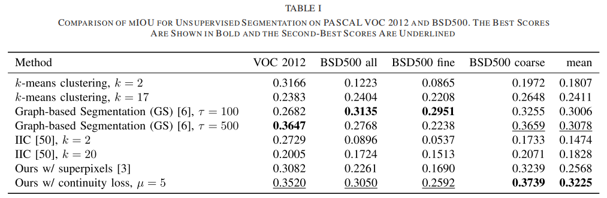

Unsupervised Learning of Image Segmentation Based on Differentiable Feature Clustering

Unsupervised Learning of Image Segmentation Based on Differentiable Feature Clustering
Wonjik Kim∗ , Member, IEEE, Asako Kanezaki∗ , Member, IEEE, and Masayuki Tanaka, Member, IEEE
摘要
本研究研究了卷积神经网络（CNNs）在无监督图像分割中的应用。与监督图像分割类似，所提出的CNN为表示像素所属的簇的像素分配标签。然而，在无监督图像分割中，事先没有指定训练图像或像素的地面真实标签。因此，一旦输入了目标图像，像素标签和特征表示将被共同优化，并通过梯度下降来更新它们的参数。在提出的方法，标签预测和网络参数学习交替迭代满足以下标准： (a)像素相似特征应该分配相同的标签，(b)空间连续像素应该分配相同的标签，和(c)唯一标签的数量应该很大。虽然这些标准是不兼容的，但所提出的方法最小化了相似性损失和空间连续性损失的组合，以找到一个合理的标签分配解决方案，以很好地平衡上述标准。这项研究的贡献有四倍。首先，我们提出了一种新的端到端无监督图像分割网络，它由归一化和一个用于可微聚类的argmax函数组成。其次，我们引入了一个空间连续性损失函数，它减轻了以往工作中固定段边界的限制。第三，我们提出了一种新的分割方法的扩展，在保持效率的情况下，比现有的方法具有更好的准确性。最后，我们介绍了该方法的另一个扩展：使用经过少量参考图像预训练的网络，而不进行隐形图像分割。在几个图像分割的基准数据集上验证了该方法的有效性。
1.介绍
图像分割几十年来一直在计算机视觉研究中引起了人们的关注。图像分割的应用包括目标检测、纹理识别和图像压缩。在监督图像分割中，使用由一对图像对和像素级语义标签组成的集合，如“天空”或“自行车”进行训练。目的是训练一个系统，对图像像素的已知类别的标签进行分类。相比之下，无监督图像分割用于预测更一般的标签，如“前景”和“背景”。后者比前者更具挑战性。此外，将图像分割成任意数量（≥2）是极其困难的。本研究考虑了一个问题，即一个图像在没有任何先前知识的情况下被分割成任意数量的显著的或有意义的区域。
一旦得到了像素级的特征表示，就可以通过对特征向量进行聚类来得到图像片段。然而，特征表示的设计仍然是一个挑战。所期望的特征表示在很大程度上取决于目标图像的内容。例如，如果目标是检测斑马作为前景，特征表示应该对黑白垂直条纹做出反应。因此，像素级的特征应该是描述每个像素周围的局部区域的颜色和纹理的。近年来，卷积神经网络（CNNs）已成功地应用于自主驾驶和增强现实游戏等监督学习场景中的语义图像分割。cnn不常用于完全无监督的场景；然而，它们在从图像像素中提取详细特征方面具有很大的潜力，而这对于无监督的图像分割是必要的。在CNN的高特征描述性的驱动下，提出了一种联合学习方法，它可以预测任意图像输入的未知聚类标签，并学习图像像素聚类的最优CNN参数。随后，提取每个簇中的一组图像像素作为一个段。
进一步讨论了对于良好的图像分割所必需的聚类标签的特征。与之前关于无监督图像分割[1]，[2]的研究类似，我们假设一个好的图像分割解决方案与人类提供的解决方案很好地匹配。当一个人被要求分割一个图像时，他们很可能会创建一个片段，每个片段对应于单个对象实例的整体或显著部分。对象实例倾向于包含具有相似颜色或纹理图案的大区域。区域颜色或纹理模式进入同一簇是一种合理的图像分割策略。为了将不同的对象实例中的段分开，最好为不同模式的相邻像素分配不同的集群标签。为了便于集群分离，还考虑了一种需要大量唯一集群标签的策略。综上所述，本文介绍了以下三个关于聚类标签的预测标准：
（a）具有相似特征的像素应该被分配到相同的标签上。
（b）空间上连续的像素应该被分配给相同的标签。
（c）唯一的集群标签的数量应该很大。
在本文中，我们提出了一种基于cnn的算法，通过联合优化特征提取函数和聚类函数来满足这些条件。本文为了实现CNN的端到端学习，提出了一种利用可微函数预测聚类标签的迭代方法。该代码可以在网上找到[code]。
本研究是之前在2018年[3]国际声学、语音和信号处理会议（ICASSP）上发表的研究成果的延伸。在之前的工作中，准则(b).采用简单的线性迭代聚类[4]进行超像素提取然而，在之前的算法的超像素提取过程中，片段的边界存在固定的局限性。在本研究中，提出了一种空间连续性损失作为减轻上述限制的替代方法。此外，还介绍了基于我们改进的无监督分割方法的两种新应用：利用用户输入的分割和利用利用不同图像的无监督学习获得的网络权值。由于该方法是完全无监督的，因此它根据图像的性质对图像进行分割，而这并不总是与用户的意图相关。作为该方法的范例应用，将涂鸦作为用户输入，并与现有方法的效果进行了比较。随后，该方法迭代获得单个输入图像的分割结果具有较高的计算代价。因此，作为该方法的另一个潜在应用，我们使用了用多个参考图像预先训练的网络权值。一旦使用该算法从多个图像中获得网络权值，固定网络就可以对一个新的看不见的图像进行分割，只要它与参考图像有点相似。并演示了该技术在视频分割任务中的应用。
本文的贡献总结如下：
我们提出了一种新的端到端可微的无监督图像分割网络。
我们引入了一个空间连续性损失函数，它减轻了我们之前的方法[3]的局限性。
我们提出了一种新的分割方法的扩展，在保持效率的同时，比现有的方法具有更好的准确性。
我们介绍了该方法的另一个扩展：使用少量的参考图像预先训练的网络，而不重新训练网络。
3. 方法
所解决的图像分割问题描述如下。为简单起见，让{}表示\(\{\}^N_{n=1}\)，除非另有说明，其中N表示输入彩色图像\(\mathcal{I} = \{v_{n} \in
\mathbb{R}^{3}\}\)的像素数。设\(f :
\mathbb{R}^3 \to \mathbb{R}^p\)是一个特征提取函数，\(\{x_n\in\mathbb{R}^p\}\)是一组图像像素的p维特征向量。聚类标签\(\{c_n\in\mathbb{Z}\}\)由\(c_n = g(x_n)\)分配给所有像素，其中\(g:\mathbb{R}^p\to\mathbb{Z}\)表示映射函数。在这里，g可以是一个赋值函数，它返回最接近\(x_n\)的簇质心的标签。对于f和g是固定的情况，利用上述公式得到{cn}。相反地，如果f和g是可训练的，而{cn}是指定的（固定的），那么上述方程可以看作是一个标准的监督分类问题。在这种情况下，如果f和g是可微的，则f和g的参数可以通过梯度下降法进行优化。然而，在本研究中，在以完全无监督的方式训练f和g的参数时，我们预测了未知的{cn}。为了实现这一点，我们解决了以下两个子问题：预测固定f和g的最优{cn}和训练固定{cn}的f和g参数。
值得注意的是，第一节引入的三个标准是不相容的，永远不能完美地满足。使用经典方法解决这个问题的一个可能的解决方案是：对于标准(a)，对{xn}使用k-means聚类；对于标准(b)，使用到质心的距离执行图切割算法[17]；对于标准(c)，使用非参数方法确定k-means聚类中的k。然而，这些经典的方法只适用于固定的{xn}，因此求解可能是次优的。因此，我们提出了一种基于cnn的算法来解决这个问题。{xn}和{cn}的特征提取函数以满足上述所有条件的方式进行了联合优化。为了实现CNN的端到端学习，提出了一种使用可微函数预测{cn}的迭代方法。提出了一个CNN结构，如图1所示，以及一个损失函数来满足第一节中描述的三个标准。
图1。训练CNN的算法的说明。输入图像输入CNN，使用特征提取模块提取深度特征{xn}。随后，一维（1D）卷积层计算了q维聚类空间中特征的响应向量{rn}，其中本图中的q = 3。在这里，z1、z2和z3代表了集群空间的三个轴。随后，使用批处理归一化函数在集群空间的轴上对响应向量进行归一化。此外，集群标签{cn}是通过使用argmax函数将集群标识分配给响应向量来确定的。然后将聚类标签作为伪目标来计算特征相似性损失。最后，计算了空间连续性损失和特征相似性损失，并进行了反向传播。
提出的考虑标准(a)和标准(c)的CNN架构的概念在第三节-A中详细介绍。解决标准(a)和(b)的损失函数的概念在第三-b节中提出。使用反向传播训练CNN的细节在第三-C节中描述。
A.网络架构
1)对特征相似性的约束
我们考虑为具有相似特征的像素分配相同的标签的第一个标准。所提出的解决方案是应用一个线性分类器，将每个像素的特征分类为q类。在本研究中，我们假设输入是一个RGB图像\(\mathcal{I}=\{\boldsymbol{v}_{n}\in{\mathbb{R}^{3}}\}\)，其中每个像素值被归一化到[0,1]。{\(v_n\)}通过M个卷积分量计算p维特征图{\(x_n\)}，每个卷积分量由一个二维（2D）卷积、ReLU激活函数和一个批归一化函数组成，其中一批对应于单个输入图像的N个像素。在这里，我们为所有的M个组件设置了p个区域大小为3×3的滤波器。值得注意的是，这些用于特征提取的组件可以被全卷积网络（FCN）[20]等替代方案所取代。随后，通过应用一个线性分类器得到一个响应图{\(r_n = W_cx_n\)}，其中\(W_{c} \in \mathbb{R}^{q\times p}\)。然后将响应映射归一化为\(\{r_n^{\prime}\}\)，使\(\{r_n^{\prime}\}\)的均值和单位方差为零。标准化过程背后的动机在第三-A2节中描述。最后，通过选择\(r_n^{\prime}\)中最大的维数，得到每个像素的聚类标签\(c_n\)。这种分类规则被称为argmax分类。这种处理方法直观地对应于将特征向量聚类成q个聚类。最终响应的第\(i\)簇\(\{r_n^{\prime}\}\)可以写成： \[C_{i}=\{r_{n}^{\prime}\in\mathbb{R}^{q}\mid r_{n,i}^{\prime}\geq r_{n,j}^{\prime}, \forall j\},\] 其中，\(r_{n,i}^{\prime}\)表示\(r_n^{\prime}\)的第\(i\)个元素。这相当于将每个像素分配给q个代表点之间的最近点，这些点被放置在q维空间中各自的轴上的无限距离上。值得注意的是，Ci可以是∅，因此唯一的聚类标签的数量可以任意地从1到q。
2)对唯一集群标签数量的约束
在无监督的图像分割中，没有线索知道在一个图像中应该生成多少个片段。因此，唯一的集群标签的数量应该自适应图像内容。如在第三-A1节中所述，所提出的策略是将像素划分为任意数量\(q^{\prime}(1\leq q^{\prime}\leq q)\)的簇，其中\(q\)为\(q^{\prime}\)的最大可能值。一个大的\(q^{\prime}\)表示过分割，而一个小的\(q\)表示过分割。为了训练一个神经网络，我们设置了初始的（最大）数量q。然后，在迭代更新过程中，通过考虑特征相似性和空间连续性约束，对相似或空间接近的像素进行集成。这一现象导致唯一的聚类标签\(q^{\prime}\)的数量减少，即使对\(q^{\prime}\)没有明确的限制。
如图1所示，所提出的基于argmax分类的聚类函数对应于\(q^{\prime}\)-类聚类，其中\(q^{\prime}\)锚点对应于q轴上无穷远处的q点的一个子集。上述标准(a)和(b)只促进了像素的分组，这可能导致一个简单的解决方案，即\(q^{\prime}=1\)。为了防止这种分割失败，引入了第三个标准准则，即对大\(q^{\prime}\)的限制。所提出的解决方案是在使用argmax分类分配聚类标签之前，为响应映射{\(r_n\)}插入轴内归一化过程。在这里，使用了批处理规范化[46]。这个操作，也称为白化，将原始响应\(\{r_n\}\)转换为\(\{r_n^{\prime}\}\)，其中每个轴的均值为零且为单位方差。这使得每个\(r_{n,i}^{\prime}\;(i=1,\cdot\cdot\cdot,q)\)都更有机会成为各轴上的\(r_n^{\prime}\)的最大值。虽然这个操作并不能保证每个簇索引i（i = 1，...，q）对任何n（n = 1，...，N）都达到最大值，但是，由于这个操作，许多簇索引将对任何n（n = 1，...，N）达到最大值。因此，这种轴内归一化过程使所提出的系统更倾向于更大的\(q^{\prime}\)。
B.损失函数
所提出的损失函数L由特征相似性约束和空间连续性约束组成，表示如下： \[L=\underbrace{L_{\mathrm{sim}}(\{r_{n}^{\prime},c_{n}\})}_{\text{feature similarity}}+\mu\underbrace{L_{\mathrm{con}}(\{r_{n}^{\prime}\})}_{\text{spatial continuity}},\] 其中，\(\mu\)表示平衡这两个约束条件的权重。虽然所提出的方法是一种完全无监督的学习方法，但我们也研究了使用以涂鸦作为用户输入的方法。在使用涂鸦信息进行分割的情况下，损失函数(1)被简单地使用另一个权重ν进行修改如下： \[L=\underbrace{L_{\mathrm{sim}}(\{r_{n}^{\prime},c_{n}\})}_{\mathrm{feature~similarity}}+\mu\underbrace{L_{\mathrm{con}}(\{r_{n}^{\prime}\})}_{\mathrm{spatial~continuity}}+\nu\underbrace{L_{\mathrm{scr}}(\{r_{n}^{\prime},s_{n},u_{n}\})}_{\mathrm{scribble~information}}.\] 上述功能的每个组成部分将在下面各自的部分中进行描述。
1)对特征相似性的约束
如在第3-A1节中所述，将argmax函数应用于归一化响应映射\(\{r_n^{\prime}\}\)，得到聚类标签{cn}。进一步利用聚类标签作为伪目标。在该方法中，计算了\(\{r_n^{\prime}\}\)和{cn}之间的以下交叉熵损失，作为对特征相似性的约束条件： \[L_{\mathrm{sim}}(\{\boldsymbol{r}_n',c_n\})=\sum_{n=1}^N\sum_{i=1}^q-\delta(i-c_n)\ln r_{n,i}',\] 其中 \[\delta(t)=\begin{cases}1&\text{if }t=0\\0&\text{otherwise.}\end{cases}\] 这个损失函数背后的目的是增强相似特征的相似性。一旦根据图像像素的特征进行聚类，同一聚类内的特征向量应该彼此相似，而来自不同聚类的特征向量应该彼此不同。通过最小化该损失函数，更新网络权值，以方便提取更有效的聚类特征。
2)在空间连续性上的约束
如在第三-A1节中所示，图像像素聚类的基本概念是将相似的像素分组为聚类。然而，在图像分割中，图像像素的聚类最好是空间连续的。此外，还引入了一个额外的约束条件，使集群标签与相邻像素的标签相同。与[47]类似，我们将响应图\(\{r_n^{\prime}\}\)的水平和垂直差异的L1-范数作为一个空间约束。我们可以用一个微分算子来实现这个过程。更具体地说，空间连续性损失\(L_{con}\)的定义如下： \[L_{\mathrm{con}}(\{\boldsymbol{r}_n'\})=\sum_{\xi=1}^{W-1}\sum_{\eta=1}^{H-1}\parallel\boldsymbol{r}_{\xi+1,\eta}^{\prime}-\boldsymbol{r}_{\xi,\eta}^{\prime}\parallel_1+\parallel\boldsymbol{r}_{\xi,\eta+1}^{\prime}-\boldsymbol{r}_{\xi,\eta}^{\prime}\parallel_1,\]
其中，W和H表示输入图像的宽度和高度，而\(\boldsymbol{r}_{\xi,\eta}^{\prime}\)表示响应映射\(\{r_n^{\prime}\}\)中在\((\xi,\eta)\)处的像素值。
通过应用空间连续性损失\(L_{con}\)，可以抑制由于复杂的图案或纹理而产生的过多的标签。
3)对脚本作为用户输入的约束
基于涂鸦信息的图像分割技术已被广泛研究，[15]，[31]-[33]。在该方法中，引入了涂鸦损失\(L_{scr}\)作为部分交叉熵如下： \[L_{\mathrm{scr}}(\{\boldsymbol{r}_n',s_n,u_n\})=\sum_{n=1}^N\sum_{i=1}^q-u_n\delta(i-s_n)\ln r_{n,i}',\] 其中un = 1，如果第n个像素是一个涂鸦像素，否则为0，sn表示每个像素的涂鸦标签。
C. 通过反向传播来学习网络
在本节中，描述了训练网络进行无监督图像分割的方法。一旦输入目标图像，就解决了以下两个子问题：使用固定网络参数的聚类标签的预测和使用（固定的）预测聚类标签的训练网络参数。前者对应于一个网络的正向过程，以及在在第三-A节中描述的所提出的架构。后者对应于基于梯度下降的网络的逆向过程。随后，我们计算并反向传播在第三-B节中描述的损失L来更新卷积滤波器\(\{W_m\}^M_{m=1}\)的参数以及分类器Wc的参数。本研究采用动量随机梯度下降法更新参数。参数用Xavier初始化[48]进行初始化，根据输入输出层大小归一化的均匀分布中采样值。这个前后过程迭代T次，得到聚类标签{cn}的最终预测。算法1显示了所提出的无监督图像分割算法的伪代码。
由于这个迭代过程需要少量的计算时间，我们进一步介绍了使用所提出的方法与一个或多个参考图像。如果目标图像与参考图像有些相似，则可以重用使用这些图像进行预处理时训练的固定网络权值。在第四-C节中研究了参考图像的有效性。
如图1所示，所提出的CNN网络由基本功能组成。所提出的CNN最独特的部分是在最终的卷积层和argmax分类层之间存在批处理归一化层。与监督学习场景不同，其中的目标标签是固定的，在轴上的响应的批量归一化是必要的，以获得合理的标签{cn}(见第三-A2节)。此外，与监督学习相比，{cn}有多个具有不同网络参数的解，可以实现接近于零的损失。学习速率的值控制了参数更新和聚类之间的平衡，导致{cn}的解不同。我们将学习率设置为0.1，动量为0.9。
4. 实验结果

表1 PASCAL VOC 2012和BSD500无监督分割MIOU的比较。最好的分数用粗体显示，第二好的分数用下划线表示
5.代码结构
（未完不待续）